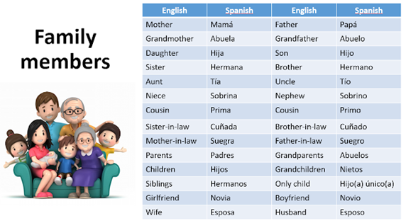
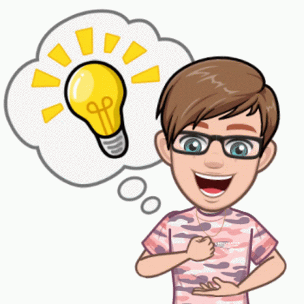

THE FAMILY MEMBERS
OBJETIVO: Aprender los miembros de la familia en inglés su relación entre ellos.
"The Family" La familia es uno de los temas de conversación más comunes. ¡Aprendamos cómo describir a los miembros de la familia y cómo decir los nombres de familiares y parientes en ingles!

Imagen tomada de: Vocabulary: Family members (englishatcasd.blogspot.com)
En este video de You Tube encontrarás información acerca de algunos de los miembros de la familia y algunas de las actividades que realizan.
Diviértete practicando su pronunciación.
Querido estudiante, qué mejor manera de comenzar a aumentar el vocabulario que con actividades que nos sean fáciles de relacionar, memorizar y a partir de situaciones cotidianas. Los miembros de la familia juegan un papel fundamental en nuestro entorno inmediato y vamos a aprenderlos.
Revisa los videos propuestos sobre el vocabulario de los miembros de la familia y escríbelos en tu cuaderno en inglés y español, practica su pronunciación.
Luego desarrolla la guía propuesta "Meet my family":
1. Completa el árbol familiar arrastrando los nombres de los miembros de la familia y ubicándolo en los espacios correspondientes.
2. Lee las descripciones de los 4 chicos y teniendo en cuenta la información escribe el número de las descripciones en los recuadros de las fotografías de cada familia.
https://www.liveworksheets.com/w/en/english-second-language-esl/2149239?authuser=0
Revisa el video de la canción "I love my family", apréndela de memoria y realiza un video muy creativo con ayuda de tu familia cantándola en inglés.
Envía el video de la canción por el correo electrónico o por WhatsApp para que sea revisado..
Espero te diviertas con esta actividad.
Resuelve la guía propuesta sobre los miembros de la familia.
1. Encuentra las palabras en la sopa de letras y cópialas debajo de cada imagen correspondiente.
2. En el crucigrama los nombres de los familiares están incompletos, Llena los espacios para completar las palabras teniendo en cuenta las imágenes.
3. Reorganiza las letras de los miembros de la familia y completa las palabras, luego conecte cada palabra con su imagen correspondiente.
https://www.liveworksheets.com/w/en/social-studies/850552

Desarrolla los siguientes ejercicios propuestos en la pestaña siguiente y disfruta practicando y aprendiendo.